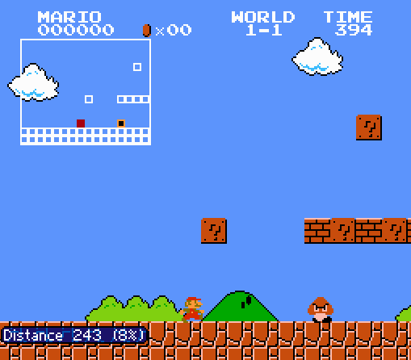

|
Research
I'm interested in machine learning, control theory, aerial robotics and bio-inspired systems.
|
|
Neural Lander: Stable Drone Landing Control using Learned Dynamics
Guanya Shi, Xichen Shi, Michael O'Connell, Rose Yu, Kamyar Azizzadenesheli, Animashree Anandkumar, Yisong Yue, Soon-Jo Chung
submitted to International Conference on Robotics and Automation (ICRA), 2019
We present a novel deep-learning-based robust nonlinear controller for stable quadrotor control during landing. Our approach blends together a nominal dynamics model coupled with a DNN that learns the high-order interactions, such as the complex interactions between the ground and multi-rotor airflow. To the best of our knowledge, this is the first DNN-based nonlinear feedback controller with stability guarantees that can utilize arbitrarily large neural nets. [Video]
|
|
Drag Reduction in a Natural High-Frequency Swinging Micro-Articulation: Mouthparts of the Honey Bee
Guanya Shi, Jianing Wu, Shaoze Yan
Journal of Insect Science, 2017
My undergraduate work about biomechanics. I studied how a honeybee drinks water and showed that honeybee's drinking strategy is optimal.
|
|
How to dip nectar: optimal time apportionment in natural viscous fluid transport
Jianing Wu, Guanya Shi, Yiwei Zhao, Shaoze Yan
Journal of Physics D: Applied Physics, 2018
It is also my undergraduate work about biomechanics and bio-inspired robotics.
|
|  |
Teaching Mario to Play Mario: Reinforcement Learning on Super Mario Bros.
Guanya Shi, Botao Hu, Yan Wu
Final project of Caltech CS 159. We present a deep learning model to successfully learn control policies from high-dimensional input data using reinforcement learning. The model is based on the idea of Deep Q-Network (DQN), with convolutional neural network trained by Q-learning algorithm, whose input is tile representation of the screen and output is a value estimation function. Also, replay buffer, target network and double Q-learning are applied to lower data dependency and approximate real gradiant descent.
|
|
Hobbies
I love playing basketball, soccer and MOBA games. I am also very interested in photography, hiking, travelling and cooking. Here are some pictures by me.
|
| Winter Tsinghua |
Winter Tsinghua |
| Beijing National Stadium |
Taipei |
| Wudaokou, Beijing |
Tokugawaen, Nagoya, Japan |
| Odaiba, Tokyo |
Yosemite, California |
|